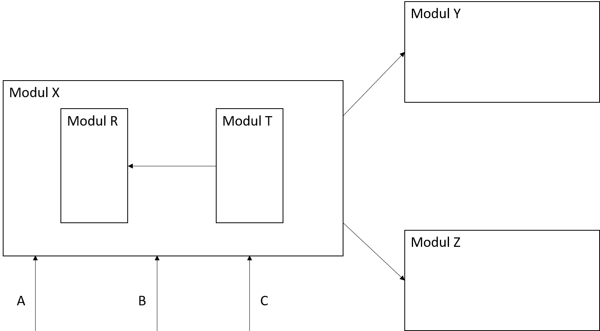
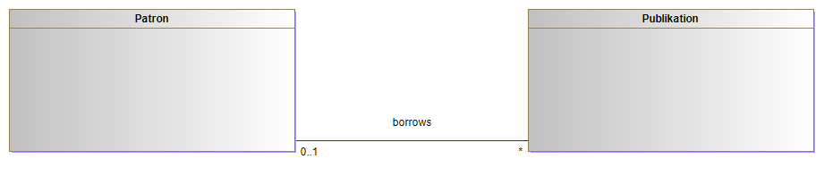

UML - Einführung
Marcel Lüthi
Departement Mathematik und Informatik
Graphische Modellierungssprachen
- Ziel: Software auf hoher Abstraktions-ebene verstehen

- Brauchen standardisierte Notationen um Artefakte und Entscheidungen zu
- Modellieren
- Dokumentieren
- Kommunizieren
UML
Grafische Modellierungssprache zur Spezifikation, Konstruktion und Dokumentation von Software-Teilen und anderen Systeme
- Quasi standard zur graphischen Modellierung von OO-Systemen
- Entwickelt 1990 (G. Booch, I. Jacobson, J. Rumbaugh)
- Mittlerweise in der Version 2.5
UML Hype

- UML ist kein Wundermittel wie anfang 2000 geglaubt wurde
- ... aber trotzdem enorm nützlich
Diagrammarten (UML 2)
Strukturdiagramme
(statisch)
- Klassendiagramm
- Montagediagramm
- Komponentendiagramm
- Verteilungsdiagramm
- Objektdiagramm
- Paketdiagramm
- Profildiagramm
Verhaltensdiagramme (dynamisch)
- Aktivitätsdiagramm
- Use-case Diagramm
- Interaktionsdiagramm
- Kommunikationsdiagramm
- Sequenzdiagramm
- Zeitverlaufdiagramm
- Zustandsdiagramm
UML Diagramme im Designprozess

Klassendiagramm
- Wichtigste Diagrammart in UML
- Häufig nur als Designnotation verwendet
- Ist aber auch mächtiges Modellierungstool
- Klassen entsprechen zu modellierenden Entitäten
- Klasse in UML muss nicht Klasse in Implementation entsprechen
Beispiel: Bibliotheksanwendung

Assoziationen
- Beziehungen zwischen Klassen, die Implementation unterstützen muss
- Definiert implizit eine "Uses" Beziehung
- Optional: Multiplizitäten
Aggregation

- Beschreibt Teile/Ganzes Beziehung
- Auch "has-a" Beziehung genannt

Komposition

- Beschreibt Teile/Ganzes Beziehung
- Auch "has-a" Beziehung genannt
- Aggregation: Teil kann ohne Ganzes existieren
- Komposition: Teil kann nur als Teil vom Ganzen existieren
Aggregation
- Aggregation/Komposition entspricht nicht "IS_COMPONENT_OF"
- Aggregat (Dreieck) hat eigene Methoden und Semantik
Paketdiagramm

- Modelliert "IS_COMPONENT_OF" Beziehung
Toolunterstützung
- Weite Verbreitung → Gute Toolunterstützung
- Empfehlung: Modelio (www.modelio.org)
- Modernes und mächtiges Open Source Tool